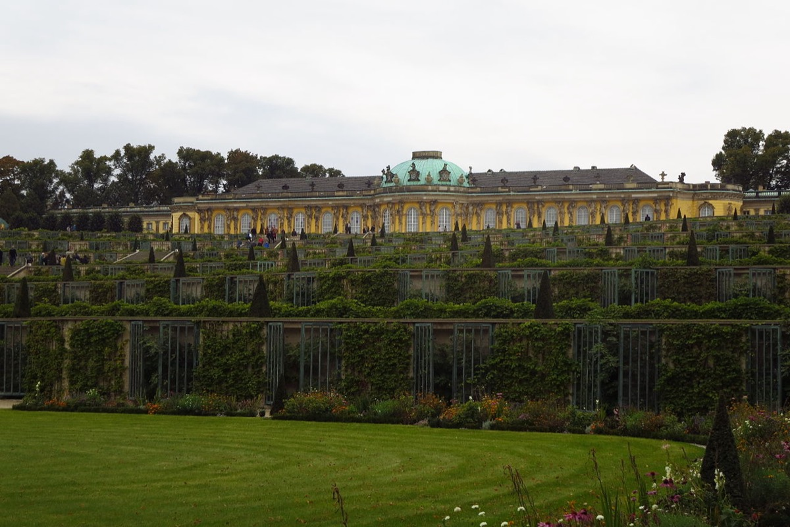

Potsdam, Prussian royal residence

The place then. Frederick the Great's chosen residence outside Berlin — the Stadtschloss in town and, rising that very decade, Sanssouci, the intimate palace of the philosopher-king's private world: French conversation, flute concerts at seven, C.P.E. Bach at the keyboard, and a growing collection of Silbermann's newfangled fortepianos distributed through the rooms.
The two days. The event card tells it whole: the cancelled concert, the tour of the fortepianos, the royal theme and the improvised fugues, the next day's organ recital at the Heiliggeistkirche, and the two-month echo — the Musical Offering, engraved and dedicated. The single most storied musical visit of the century, and the last long journey of Bach's life.
What survives today. Sanssouci stands in its vineyard terraces, music room intact — the era's most visitable Bach scene outside Saxony/Thuringia; the Stadtschloss (destroyed in the war) has been rebuilt as the Brandenburg parliament; the Heiliggeistkirche is gone. Frederick's flutes and a Silbermann fortepiano survive in the palace collections: the actual hardware of the timeline's most famous evening.